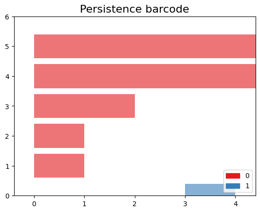

Computational Tools for TDA
Last updated on 2026-02-20 | Edit this page
Estimated time: 45 minutes
Overview
Questions
- How can I computationally manipulate simplicial complexes?
Objectives
- Operate simplicial complexes in a computational environment
- Create Vietoris-Rips and Alpha complexes from diverse datasets
- Apply persistent homology to obtain barcode and persistence diagrams
Introduction to GUDHI and Simplicial Homology
Welcome to this lesson on using GUDHI and exploring simplicial homology. GUDHI (Geometry Understanding in Higher Dimensions) is an open-source that provides algorithms and data structures for the analysis of geometric data. It offers a wide range of tools for topological data analysis, including simplicial complexes and computations of their homology.
To begin, we will import the necessary packages.
PYTHON
from IPython.display import Image # Import the Image function from IPython.display to display images in Jupyter environments.
from os import chdir # Import chdir from os module to change the current working directory.
import numpy as np # Import numpy library for working with n-dimensional arrays and mathematical operations.
import gudhi as gd # Import gudhi library for computational topology and computational geometry.
import matplotlib.pyplot as plt # Import pyplot from matplotlib for creating visualizations and graphs.
import argparse # Import argparse, a standard library for writing user-friendly command-line interfaces.
import seaborn as sns # Import seaborn for data visualization; it's based on matplotlib and provides a high-level interface for drawing statistical graphs.
import requests # Import requests library to make HTTP requests in Python easily.Example 1: SimplexTree and Manual Filtration
The SimplexTree data structure in GUDHI allows efficient manipulation of simplicial complexes. You can demonstrate its usage by creating a SimplexTree object, adding simplices manually, and then filtering the complex based on a filtration value.
Create SimplexTree
With the following command, you can create a SimplexTree object named
st, which we will use to add the information of your
filtered simplicial complex:
Insert simplex
In GUDHI, you can use the st.insert() function to add
simplices to a SimplexTree data structure. Additionally, you have the
flexibility to specify the filtration level of each simplex. If no
filtration level is specified, it is assumed to be added at filtration
time 0.
OUTPUT
TrueNow let’s insert 1-simplices at different filtration levels. If adding a simplex requires a lower-dimensional simplex to be present, the missing simplices will be automatically completed.
Here’s an example of inserting 1-simplices into the SimplexTree at various filtration levels:
PYTHON
# Insert 1-simplices at different filtration levels
st.insert([0, 1], filtration=0.5)
st.insert([1, 2], filtration=0.8)
st.insert([0, 2], filtration=1.2)OUTPUT
TrueNote
If any lower-dimensional simplices are missing, GUDHI’s SimplexTree will automatically complete them. For example, when inserting the 1-simplex [1, 2] at filtration level 0.8, if the 0-simplex [1] or [2] was not already present, GUDHI will add it to the SimplexTree.
Now, you can use the st.num_vertices() and
st.num_simplices() commands to see the number of vertices
and simplices, respectively, in your simplicial complex stored in the st
SimplexTree object.
PYTHON
num_vertices = st.num_vertices()
num_simplices = st.num_simplices()
print("Number of vertices:", num_vertices)
print("Number of simplices:", num_simplices)OUTPUT
Number of vertices: 3
Number of simplices: 6Persistence
The st.persistence() function in GUDHI’s SimplexTree is
used to compute the persistence diagram of the simplicial complex. The
persistence diagram provides a compact representation of the birth and
death of topological features as the filtration parameter varies.
Here’s an example of how to use st.persistence():
PYTHON
# Compute the persistence diagram
persistence_diagram = st.persistence()
# Print the persistence diagram
for point in persistence_diagram:
birth = point[0]
death = point[1]
print("Birth:", birth)
print("Death:", death)
print()OUTPUT
Birth: 0
Death: (0.0, inf)
Birth: 0
Death: (0.0, 0.5)Plot the persistence diagram
The
gd.plot_persistence_diagram(persistence_diagram, legend=True)
is used to plot a persistence diagram using the Gudhi library in Python.
A persistence diagram is a visual representation of the topological
features captured by the simplicial homology computation.
The plot_persistence_diagram() function takes the
persistence diagram as input and generates a plot to visualize this
information. The legend=True argument enables the display
of a legend, which provides additional information about the different
types of topological features represented in the diagram.
OUTPUT
<AxesSubplot:title={'center':'Persistence diagram'}, xlabel='Birth', ylabel='Death'>

Plot the barcode
The code snippet
gd.plot_persistence_barcode(persistence_diagram, legend=True)
is used to generate a persistence barcode plot using the Gudhi library
in Python. A persistence barcode provides a different way to visualize
the evolution of topological features captured by the persistence
diagram.
In topological data analysis, a persistence barcode represents the lifespan of topological features as intervals on a real number line. Each interval corresponds to a topological feature, and its length represents the duration of the feature’s existence.
The plot_persistence_barcode() function takes the
persistence diagram as input and generates a plot that visualizes these
intervals. The bars in the barcode plot represent the topological
features, and their lengths indicate the duration of their
existence.
OUTPUT
<AxesSubplot:title={'center':'Persistence barcode'}>

By examining the persistence barcode plot, one can observe the distribution and lengths of the bars. Longer bars indicate more persistent topological features, while shorter bars represent features that appear and disappear quickly. The legend displayed with legend=True provides additional information about the types of topological features represented in the barcode.
This visualization allows for the identification of significant topological features and their persistence across different scales. It provides insights into the robustness and stability of these features in the dataset, helping to reveal important structural patterns and understand the underlying topology of the data.
Exercise 1(Intermediate): Creating a Manually Filtered Simplicial Complex.
In the following graph, we have \(K\) a simplicial complex filtered representation of simplicial complexes.
{kind=link}
> Perform persistent homology and plot the persistence diagram
and barcode. > > ## Solution 
> > Step 1: Create a SimplexTree with
gd.SimplexTree(). > > ~ >> st =
gd.SimplexTree()
>> ~ >> {: .language-python}
>> Step 2: Insert vertices at time 0 using
st.insert() > > ~ >> #insert
0-simplex (the vertex), >> st.insert([0]) >> st.insert([1])
>> st.insert([2]) >> st.insert([3]) >> st.insert([4])
>> ~ >> {: .language-python}
>> Step 3: Insert the remaining simplices by setting the
filtration time using st.insert([0, 1], filtration=). >
> ~ >> #insert 1-simplex level filtration 1 >>
st.insert([0, 2], filtration=1) >> st.insert([3, 4], filtration=1)
>> #insert 1-simplex level filtration 2 >> st.insert([0, 1],
filtration=2) >> #insert 1-simplex level filtration 3 >>
st.insert([2, 1], filtration=3) >> #insert 1-simplex level
filtration 4 >> st.insert([2, 1,0], filtration=4) >>
~ >> {: .language-python}
>> Step 4: Perform persistent homology using
st.persistence(). > > ~ >># Compute
the persistence diagram >> persistence_diagram = st.persistence()
>> ~ >> {: .language-python}
>> Step 5: Plot the persistence diagram. > > ~
>># plot the persistence diagram >>
gd.plot_persistence_diagram(persistence_diagram,legend=True) >>
~ >> {: .language-python}
>> Step 6: Plot the barcode. > > ~ >>
gd.plot_persistence_barcode(persistence_diagram,legend=True) >>
~ >> {: .language-python}
>> Step 7: Get this output
>> >>
> {: .solution} {: .challenge}
{kind=link}
Example 2: Rips complex from datasets
In this example, we will demonstrate an application of persistent homology using a dataset generated by us. Persistent homology is a technique used in topological data analysis to study the shape and structure of datasets.
Generate dataset
The make_circles() function from scikit-learn’s datasets
module is used to generate synthetic circular data. We specify the
number of points to generate (n_samples), the amount of noise to add to
the data points (noise), and the scale factor between the inner and
outer circle (factor).
The generated dataset consists of two arrays: circles and labels. The circles array contains the coordinates of the generated data points, while the labels array assigns a label to each data point (in this case, it will be 0 or 1 representing the two circles).
PYTHON
from sklearn import datasets # Import the datasets module from scikit-learn
# Generate synthetic data using the make_circles function
# n_samples: Number of points to generate
# noise: Standard deviation of Gaussian noise added to the data
# factor: Scale factor between inner and outer circle
circles, labels = datasets.make_circles(n_samples=100, noise=0.06, factor=0.5)
# Print the dimensions of the generated data
print('Data dimension: {}'.format(circles.shape))OUTPUT
Data dimension:(100, 2)Plot dataset
PYTHON
fig = plt.figure() # Create a new figure
ax = fig.add_subplot(111) # Add a subplot to the figure
ax = sns.scatterplot(x=circles[:,0], y=circles[:,1], s=15) # Create a scatter plot using seaborn
plt.title('Dataset with N=%s points'%(circles.shape[0])) # Set the title of the plot
plt.show() # Display the plot

Create Rips complex
First, we create a Rips complex using the RipsComplex
class from gudhi. The Rips complex is a simplicial complex
constructed from the given data points by connecting them with edges if
their pairwise distances are below a specified threshold. In this case,
we set the max_edge_length parameter to 0.6, which
determines the maximum length allowed for an edge to be included in the
complex.
PYTHON
%%time
# Create a Rips complex with a maximum edge length of 0.6
Rips_complex = gd.RipsComplex(points = circles, max_edge_length=0.6)OUTPUT
CPU times: user 461 µs, sys: 88 µs, total: 549 µs
Wall time: 557 µsNext, we create a simplex tree using the
create_simplex_tree() method of the
Rips_complex object. The simplex tree is a data structure
that stores the information about the simplices in the complex. We
specify max_dimension=3 to include simplices up to
dimension 3 in the complex.
PYTHON
%%time
#Create a simplex tree from the Rips complex with a maximum dimension of 3
Rips_simplex_tree = Rips_complex.create_simplex_tree(max_dimension=3) OUTPUT
CPU times: user 2.25 ms, sys: 0 ns, total: 2.25 ms
Wall time: 1.95 msThen, we retrieve the filtration order of simplices from the
Rips_simplex_tree using the get_filtration()
method. Filtration is a sequence of simplices ordered by their inclusion
in the complex. We convert the filtration to a list using
list().
PYTHON
%%time
# Get the filtration order of simplices
filt_Rips = list(Rips_simplex_tree.get_filtration())OUTPUT
CPU times: user 108 ms, sys: 0 ns, total: 108 ms
Wall time: 121 msSimplicial homology
Finally, we compute the persistence of the Rips complex using the
persistence() method of the Rips_simplex_tree.
Persistence computes the birth and death values for each topological
feature (connected components, loops, voids, etc.) in the complex. The
result is assigned to the variable diag_Rips.
PYTHON
%%time
# Compute the persistence of the Rips complex
diag_Rips = Rips_simplex_tree.persistence()OUTPUT
CPU times: user 9.13 ms, sys: 41 µs, total: 9.17 ms
Wall time: 8.82 msPlots the persistence diagram and barcode
The plot_persistence_diagram() function takes the
persistence diagram (diag_Rips) as input and creates a
scatter plot of the points. The birth and death values are used to
determine the positions of the points in the diagram.
Additionally, the legend parameter is set to
True, which displays a legend in the plot. The legend
provides information about the colors or markers used to differentiate
different topological dimensions or features.
OUTPUT
<AxesSubplot:title={'center':'Persistence diagram'}, xlabel='Birth', ylabel='Death'>

The persistence barcode is another graphical representation of the persistence pairs obtained from the computation of persistent homology. It visualizes the birth and death values of topological features as intervals on a barcode-like plot.
The plot_persistence_barcode() function takes the
persistence diagram (diag_Rips) as input and creates a
barcode plot. Each bar in the plot represents a topological feature, and
its length corresponds to the persistence or lifetime of the feature.
The x-axis represents the range of values for the birth and death of the
features.
The legend parameter is set to True in
order to display a legend in the plot. The legend provides information
about the colors or markers used to differentiate different topological
dimensions or features.
OUTPUT
<AxesSubplot:title={'center':'Persistence barcode'}>

Example 3: Rips complex from datasets
We are using the gudhi library to load a 2D point cloud data from a CSV file and visualize it using matplotlib.
First, we import the necessary modules from gudhi to work with datasets and construct the Alpha complex. We import _points from gudhi.datasets.generators to generate points and AlphaComplex to construct the Alpha complex.
We use the requests.get() function to send a GET request
to the specified URL and retrieve the content of the file. The content
is stored in the response object, and we extract the text content using
response.text.
The text content is then loaded into a NumPy array using
np.loadtxt(). The content.splitlines() splits
the text content into lines, and delimiter=' ' specifies
that the values in each line are separated by a space.
Finally, we visualize the loaded data by plotting the points using
plt.scatter(). The data[:, 0] and
data[:, 1] select the first and second columns of the data
array, representing the x and y coordinates respectively. The
marker='.' specifies the marker style as a dot, and
s=1 sets the marker size. The points are then displayed
using plt.show().
PYTHON
# Load the file spiral_2d.csv from the specified URL
url = 'https://raw.githubusercontent.com/paumayell/topological-data-analysis/gh-pages/files/spiral_2d.csv'
# Get the content of the file
response = requests.get(url)
content = response.text
# Load the data into a NumPy array
data = np.loadtxt(content.splitlines(), delimiter=' ')
# Plot the points
plt.scatter(data[:, 0], data[:, 1], marker='.', s=1)
plt.show()

we are using the AlphaComplex class from the
gudhi library to construct an Alpha complex from the loaded
2D point cloud data.
First, we create an instance of the AlphaComplex class,
alpha_complex, by passing the data array to
the points parameter. This initializes the Alpha complex object and
prepares it to construct the complex based on the given points.
Next, we create a simplex tree using the
create_simplex_tree() method of the
alpha_complex object. The simplex tree is a data structure
that stores the information about the simplices in the Alpha complex. It
represents the hierarchy of simplices in the complex, from the
lowest-dimensional simplices (vertices) to higher-dimensional simplices
(e.g., edges, triangles).
By calling create_simplex_tree(), we construct the
simplex tree based on the Alpha complex. The simplex tree contains
information about the simplices, such as their filtration values and
filtration order.
The simplex_tree object can be further utilized to
analyze and extract topological features and their persistence from the
constructed Alpha complex. It provides various methods for computing
persistence, extracting persistence diagrams, and performing other
topological computations.
Overall, the code segment constructs the Alpha complex from the 2D
point cloud data and creates a simplex tree to store the resulting
complex’s information. This allows for subsequent topological analysis
and computations on the constructed complex using the
simplex_tree object.
PYTHON
# Construct an Alpha complex from the data points
alpha_complex = AlphaComplex(points=data)
# Create a simplex tree based on the Alpha complex
simplex_tree = alpha_complex.create_simplex_tree()OUTPUT
CPU times: user 5.04 s, sys: 0 ns, total: 5.04 s
Wall time: 5.06 sdiag = simplex_tree.persistence()
diag = simplex_tree.persistence(homology_coeff_field=2, min_persistence=0)
print("diag=", diag)
gd.plot_persistence_diagram(diag)OUTPUT
<AxesSubplot:title={'center':'Persistence diagram'}, xlabel='Birth', ylabel='Death'>{: .language-python}

OUTPUT
/opt/tljh/user/envs/TDA2/lib/python3.7/site-packages/gudhi/persistence_graphical_tools.py:83: UserWarning: There are 229062 intervals given as input, whereas max_intervals is set to 20000.
% (len(persistence), max_intervals)

Exercise 2(Intermediate): Constructing a Torus and Analyzing Persistent Homology.
{kind=link}
PYTHON
#pip install tadasets
import tadasets
import gudhi
import matplotlib.pyplot as plt
# Generate torus points
torus = tadasets.torus(n=100)
# Create a Rips complex from the torus points
rips_complex = gudhi.RipsComplex(points=torus)
# Obtain the simplicial complex
simplicial_complex = rips_complex.create_simplex_tree(max_dimension=2)
# Compute the persistent homology of the simplicial complex
persistence = simplicial_complex.persistence()
# Plot diagrams
gudhi.plot_persistence_diagram(persistence, legend=True)
plt.show(){kind=link}
FIXME
Add something more to the keypoints
- GUDHI is a TDA tool
- GUDHI uses simplextree objects to efficiently store simplicial complexes
- GUDHI allows creating simplicial complexes from datasets, distance matrices, simulated data, and manually